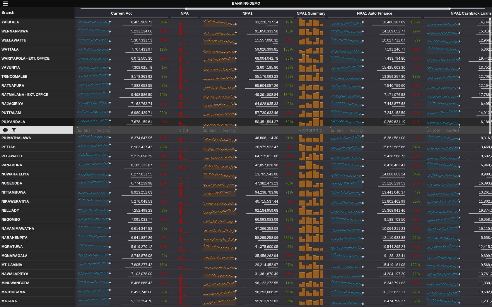

This is more like a tutorial on writing a simple node.js add-on to share memory among node.js processes.
Shared memory with Node.js
May 13, 2015
One of the limitations of node.js/io.js is that they are single threaded. Only way to use multiple cores in the processor is to run multiple processes1. But then you are working on different memory spaces. So it doesn't help if you want multiple processes working on the same memory block. This is required in memory intensive tasks that cannot be efficiently sharded.
All the source code is available in Github.
Node addon
You need node-gyp installed to build the node module.
npm install node-gyp -gI think the node.js version matters as the addon api has changed. I was working on node 0.12.2, when I tested this out.
binding.gyp is required by node-gyp to build the addon.
Then comes shm_addon.cpp. This is a very basic addon that has one export createSHM, which creates a shared memory block of 800,000 bytes (attaches if exists) with read & write permission to all users2.
Shared memory is allocated with shmget and attached to the address space of the process with shmat.
shmid = shmget( key, MEM, IPC_CREAT | 0666 );
data = (char *)shmat( shmid, NULL, 0 );It keeps a pointer to the memory block and returns it if createSHM is called twice by the same node.js program3. createSHM returns an ArrayBuffer, initialized with the pointer to the shared memory.
Local<ArrayBuffer> buffer = ArrayBuffer::New(isolate, (void *)data, MEM);The node module shm_addon is built with node-gyp with following commands.
node-gyp configure
node-gyp buildThe node addon will be created in build/Release/shm_addon.node.
Parent and child programs
This is a simple counting problem to illustrate how shared memory can be used. We will populate the array of 200,000 32-bit integers with the sequence 0,1,2,...998,999,0,1,2,..998,999,0,1,2,.... So there are 200 positions with each integer between 0 and 999. Each of the child programs (workers) will count the number of occurrences of each integer between 0 and 999 by inefficiently traversing the array a 1,000 times.
spawn.coffee is the parent program that starts the child processes. child.coffee is the child program.
Shared memory is attached by parent program and child program by calling the node addon.
shm = require './build/Release/shm_addon'
a = new Int32Array shm.createSHM()We are calculating the time taken for the child processes to count. Time it takes for processes to get spawn and exit is excluded. Therefore the child processes start counting when they receive something in the standard input. Number of child processes can be set with CHILDREN.
process.stdin.on 'data', (msg) ->
start()Running coffee spawn.coffee will start processes and do the counting and show the time it took to complete.
You can take a look at shared memory allocated by running command ipcs.
IPC status from <running system> as of Tue Apr 14 13:58:16 IST 2015
T ID KEY MODE OWNER GROUP
Shared Memory:
m 65536 0x000019a5 --rw-rw-rw- varunajayasiri staff
m 65537 0x000019a4 --rw-rw-rw- varunajayasiri staff
m 65538 0x000019a2 --rw-rw-rw- varunajayasiri staffResults
bench.coffee was used to find the time a single process takes to count.
@chethiyaa did some testing on a quad core i7.
| # children | single process (ms) | multi process (ms) | |
|---|---|---|---|
| 1 | 398 | 430 | |
| 2 | 782 | 394 | |
| 4 | 1626 | 415 | |
| 8 | 3300 | 799 | |
| 16 | 6285 | 1594 | |
| 32 | 3183 | ||
| 64 | 6372 | ||
| 128 | 13049 | ||
Getting the first B2B customer
August 11, 2014
It took Forestpin almost 2 years to get its first big customer. Making the first sale is always hard. It was a tough ride; talking to a lot of potential customers, changing product strategy from time to time, taking up classes on pitching and of course a lot of programming. We learned a lot during the process.
Beginning
We started off in March 2012, with a meeting of a few of guys. Some of whom believed that there is a lack of tools to find fraud and irregularities in financial transactions.
The idea was to develop financial data analytics software to highlight anomalies.
First couple of months were spent on research. We talked to auditors, accountants and managers to see if they had the problem we were trying to solve. We also discussed solutions they were using to solve it.
Before starting on the product, we implemented a bunch of analyses to highlight anomalies in payments data; ran it on a large dataset and sent out compiled reports to those we talked before. We wanted to make sure that they wanted what we were building. It was quite useful since we also got feedback about other analyses they were using.
It was around May when we first started working on the product, and it was ready by mid October, 2012. Sales agents were approached, documentation and legal documents were prepared and every thing was ready; all we needed was customers. We wanted to get first few customers in Sri Lanka before selling in US. It was easier to support clients in Sri Lanka since our developers based in Sri Lanka.

Seeking customers
We decided to get sales through sales agents. It took us a lot of time to realize that it wouldn't work out with sales agents unless we get the first few sales ourselves. Losing a few months due to a bad decision is one of the terrible things that could happen to a start up - the finances drain away, founders get demotivated, and competition increases. Luckily, we managed to get a small manufacturing company in Sri Lanka through a contact. But we needed a few big Sri Lankan customers.
We pitched to companies through contacts, but it was hard - mostly because we were programmers and not marketers. Also we sometimes didn't get to pitch to decision makers. Then it takes a really long time before anything happens. Pitching without customer references made it even harder.
We didn't know how hard to push for sales; how often to call them? should we send a reminder? Pushing too much could be annoying, whilst waiting for long could reduce interest.
Meetings getting canceled and postponed (sometimes after you leave for the meeting) were very discouraging; perhaps because we don't come from a marketing background.
Forestpin Lite
One of the biggest difficulties in sales was proving that Forestpin could benefit companies. Trials weren't much useful since it needs hardware and connectors to their current databases.
Around May - June, 2013, we developed Forestpin Lite as a standalone application to analyze small datasets. Potential customers could scan a dataset with Forestpin Lite on a laptop and get an idea of how Forestpin works. It had a limited set of features, but gave a pretty good idea of what we had to offer. This was quite useful in getting the first big sale.
With Forestpin Lite, we approached the companies we had pitched earlier. We offered to analyze their data and give an overview. And it worked. The first company we approached (Hemas Holdings) liked it when they saw Forestpin Lite's analysis of *their data*. It pointed out areas that required attention.
Training
After doing a trial in August - September 2013, we offered a product training to Hemas Holdings risk team before they decided to purchase Forestpin. We believed it would help gain traction within their organization. We had to make the training useful for them even if they didn't purchase Forestpin.
Me and Chethiya had no experience in training. We were lucky that Sifaan (a professional trainer we've known for a long time) helped us prepare and deliver the training. I believe the training was one of the key factors in getting our first sale.
Next version of the software
Training was in late November 2013, and we had the second version of Forestpin ready when we did the training. They seemed quite impressed with the progress we had made from the first version they saw about 9 months back.

All these factors helped us get the first big sale. Now it's up to us to make the existing customers really happy and look for referrals. Having a couple of reference customers helps tremendously in B2B sales.
What we should have done differently
- Develop Forestpin Lite at the beginning
We should have started with Forestpin Lite. It would have much easier to validate the idea and find a product market fit. We spent a lot of time rewriting the entire system when we moved from first version to second. We would have saved all that time and gained traction faster if we had Forestpin Lite early on.
- Not approach sales agents before the first few sales
Pitching to sales agents is harder than pitching to customers when you don't have reference customers. We lost at least 6 months while we were pitching to agents. If we had more discussions with potential customers and users instead of agents we would have at least got a lot of feedback to improve the product.
- Get in touch with user communities
Although we contacted a few potential customers and users at the beginning, we didn't try to get in touch with the communities of these users. We should have got involved in their communities in social media; for example, Linkedin groups for auditors, accountants and finance managers. You can definitely get good insights by discussing with these groups.
- Talk to a lot of companies in parallel
We initiated discussions with a lot of companies. But we tried to engage with only one company at a time from trial stage. It is a trade off between focusing on a company or dividing our limited resources among a few companies. But waiting till you finish the engagement with one company before moving on to next can be disastrous. Also there were so many gaps and delays during the engagement which would have let us work with at least 5 companies in parallel.
However, it wasn't that bad in our case since the first company we gave a trial decided to purchase Forestpin.
Things we learned
- Lot of people can influence the buying decision
Unlike in consumer sales, in B2B sales a lot of people influence the buying decision. They have different requirements and responsibilities. So in order to make a sale happen smoothly all these parties should be kept satisfied. I think this is more relevant when the vendor doesn't have large portfolio.
In our case, the finance team, internal auditors or risk team, IT team and the top management were all involved in the decision making. All though it was the top management that made the final decision, it was based on inputs of other parties.
If the finance team looks at our product as something that will put more controls on them they are not going to like it. Similarly if the auditors or IT team sees it as something that is going to increase their work load they are not going to like it either.
So the pitch needs to show that the product will benefit the organization as well as individual teams.
- Sales take a long time
It takes a really long time. Sometimes more than an year. The organizations are busy with loads of work. And different teams become available at different times.
The implementation and adaptation can also take a lot of time. We still don't have much experience at this stage, but almost all the organizations we spoke to had ongoing software implementation project that had spanned for more than 6 months.
- Urgency
Sales are going to take forever if there is no sense of urgency. We haven't figured how to tackle this.
At a relatively smaller company, the sale happened within a couple of weeks, because they wanted their data analyze their data quickly. Perhaps they lost money due to a fraud or an inefficiency in the recent past, and wanted to make sure everything else is clean. And they wanted to do it quickly before losing any more money.
Having a this sort of a reason to make things happen fast can be very helpful in sales. This article by HubSpot illustrates how you can create urgency.
Black or White
July 27, 2014
Which background is better? Most text editors and document readers have light backgrounds. But there's a lot of programmers who use dark backgrounds. And there are a some analytics and dashboard applications with dark backgrounds.

Stephan Few has criticized using dark backgrounds for dashboards in his book Information Dashboard Design, citing an image of Roambi. By the way, Roambi later moved to a white background and then brought back the option of dark backgrounds.
Have you noticed that many business intelligence (BI) software companies have introduced black screens as the standard for mobile devices? Is this because mobile devices work better with black screens? If you look for the research, as I have, it isnt likely that youll find any.
No one seems to question the efficacy of light backgrounds for reading text. Why the difference? Text and graphics both involve objects that are constructed of lines and filled in areas of color. Do they differ in a way that demands a different background color? I dont think so.
In the above article he discusses arguments by vendors who use dark backgrounds. Most of the arguments he has considered are technical (battery saving, sunlight reflection) and doesn't discuss which is better if technology wasn't a constraint. I feel the discussion is biased towards light backgrounds.
The article is based on the idea that because white backgrounds are used in editors and readers for a long time, it is better to stick to it until there is solid evidence that dark backgrounds are better.
Editing and reading software use white backgrounds to mimic paper. Paper is whitish and has been there for centuries. However that was probably because of technological limitations on paper and ink colors. It was not a decision based evidence that white backgrounds are perceptually better.
Edward Tufte has brought it up in one of his discussions.
The usual metaphor for screens (projection and computer) these days seems to be black type on a white background, that is, a paper metaphor. This sometimes results in video glare, with lots of rays coming from the background. Sometimes the old fashioned computer screen seems less tiring, showing lit-up text on a dead backround.
Then he continues to discuss why his website has a light background.
But my metaphor here is paper, like a book. If reproduced on a dark background, my images (which are generally very light in value) would come blaring and glaring out of the dark surround.
Light backgrounds produce video glare. So turn the screen brightness at night and after working many hours at the computer. It is often useful to dull down the electric-blue white of the computer screen with a soft background tone, as done here.
I feel what needs to be considered is how people use your application. If they switch between your application and other applications with light backgrounds (e.g. websites, editors, physical paper), then you should consider a light background. It won't happen the other way around often since majority of software uses light backgrounds, with the exception of photo editors.
If the software is used in isolation, dark or light wouldn't make a big difference. Then the factors such as device, power consumption, coolness (aesthetics) and glare can be considered.

These dark and light screenshots are still WIP. We were trying different backgrounds to see which is better. When placed inside this blog, the screenshot with light background looks a lot better because of the surrounding.*
SEO Crap
July 27, 2014
SEO is dead - at least much different from what it was known to be. But there are a plenty of consultants who market SEO, as if it is something that is hard to get right. Many organizations fall for it.
Search engines do not want to show web sites with some special SEO sauce to be on top. They want websites that people look for.
There were days when you could use neat little tricks (link farms, etc) to go higher on search results. This was possible because it is hard for an algorithm to figure out what's better content. Now search engine algorithms have gotten better and they don't fall for these tricks.
Yet I knew from experience that the real secret to SEO was not about tricks but about making your site the best it could be for your users while keeping the search engines in mind. It was true when I started doing SEO and its true now. Doing that always, always, always works to bring more targeted search engine traffic to your website. But, sadly, the tricks that the other SEO people were doing and writing about also worked, albeit temporarily.
So as long as your website
- has good content which people like,
- is accessible to internet users,
- uses proper HTML syntax, and
- is crawlable
you don't have to worry about getting consultancy for SEO. If your web developer can't get 2, 3 and 4 right, you should get a better developer; often it requires effort to get those wrong.
2 to 10 times faster HTML animations
May 10, 2014
When animating/moving HTML elements, setting their position with -webkit-transform: matrix3d() gives two to ten times faster frame rates compared to top/left or -webkit-transform: matrix(). On mobile devices you can observe native app like performance with transform: matrix3d.
Demo
It moves a panel that contains 10,000 div elements. On my macbook air running chrome, transform:matrix3d gives 30 - 40 fps while position:top/left and transform:matrix gives 10-15 fps. You can check the frame rate by selecting Show FPS meter on Rendering tab of chrome developer tools.
The following image shows snapshot of frames timeline with top/left.

This is the snapshot of frames timeline with transform:matrix3d.

transform: matrix3d takes out the paint operation which gives increased frame.
The 3d translation layers offer a way of pre-blitting all the stuff inside the DOM element into a layer, which is therefore available for direct blitting operations inside the render tree. Well, at least that's the conceptual idea behind.
martensms on html5gamedevs.com
The frame rates with transform:matrix3d becomes about 10 times higher than other methods as the content of the panel which moves gets heavier. I tried with about a 1,000 small SVG graphs with 1,000 data points.
Most of the discussions I found on the internet were comparing top/left to transform: matrix or transform: translate 1, 2, but not so much information about using transform: matrix3d.
Weya.coffee
March 19, 2014
Here's a small example to show the usage.
userElems = []
Weya container, ->
@div ".users", ->
for user, i in users
userDiv = @div '.user', on: {click: editUser}, ->
name = @span ".name", user.name
@span ".phone", user.phone
if v.image?
@img src: user.image
userDiv.userId = i
userElems.push user: user, name: nameThe above code creates a list of users. It binds the data to the dom element userDiv.userId = i and also keeps track of all the DOM elements in userElems. This is important if you want to manipulate the DOM without reloading the entire user list, for example if a name of a user changes you could change it with userElems[changedUserId].name.textContent = changedUserName.
Is it a template engine?
Weya is quite similar to Coffeecup in terms of the syntax. But it's much faster, so it won't fail if you have lots of elements.
Also, Weya lets you register event handlers. I feel this is much cleaner than registering events later with CSS selectors, and it's easier to maintain the code since events are register within the DOM creation code.
Can it replace d3.js?
We use weya to replace most all the d3.js DOM manipulation.
Code with Weya is simpler, shorter and nicely intended. Here's the code that draws bar chart in this example.
Weya svg, ->
for d in data
@g ".g", transform: "translate(#{x0 d.State},0)", ->
for age in d.ages
@rect
width: x1.rangeBand()
x: x1 age.name
y: y age.value
height: height - y age.value
fill: color age.name
for d, i in ageNames.slice().reverse()
@g ".legend", transform: "translate(0,#{i * 20})", ->
@rect x: width - 18, width: 18, height: 18, fill: color d
@text
x: width - 24, y: 9, dy: ".35em"
style: {'text-anchor': "end"}, text: dHere's the code that does the same with d3.js.
var state = svg.selectAll(".state")
.data(data)
.enter().append("g")
.attr("class", "g")
.attr("transform", function(d) { return "translate(" + x0(d.State) + ",0)"; });
state.selectAll("rect")
.data(function(d) { return d.ages; })
.enter().append("rect")
.attr("width", x1.rangeBand())
.attr("x", function(d) { return x1(d.name); })
.attr("y", function(d) { return y(d.value); })
.attr("height", function(d) { return height - y(d.value); })
.style("fill", function(d) { return color(d.name); });
var legend = svg.selectAll(".legend")
.data(ageNames.slice().reverse())
.enter().append("g")
.attr("class", "legend")
.attr("transform", function(d, i) { return "translate(0," + i * 20 + ")"; });
legend.append("rect")
.attr("x", width - 18)
.attr("width", 18)
.attr("height", 18)
.style("fill", color);
legend.append("text")
.attr("x", width - 24)
.attr("y", 9)
.attr("dy", ".35em")
.style("text-anchor", "end")
.text(function(d) { return d; });Another problem we solved with Weya is that d3.js draws all the elements that are represented by the data at once. And with Weya we can draw progressively - this is quite useful when you have a lot of data and you don't won't the interface to go unresponsive until everything is drawn. Here's a small example to show the point.
i = 0
data = ...
draw = ->
return if i is data.length
d = data[i]
Weya container, ->
@div '.user', ->
...
i++
requestAnimationFrame draw
draw()The disadvantage of Weya over d3.js is that it doesn't bind data to DOM elements like d3.js does. So you can't use enter(), exit() and updates when data changes. But most users rarely need these features. We use Weya with our own data bindings with DOM elements (as in the first example with userElems), and we find it simpler than enter() and exit().